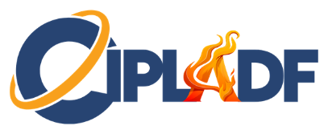

Matriz de riesgos económicos y financieros en el sector vehículos
Expositor: Ulises Seijo R.
Material enfocado en riesgos legales y económicos, señales de alerta, cumplimiento normativo y continuidad del negocio para dealers y concesionarios.

Materiales CIPLADF 2026
Accede a las ponencias disponibles en PDF y al recurso audiovisual complementario de “Detrás de la estructura”.
Ponencias CIPLADF 2026
Expositor: Ulises Seijo R.
Material enfocado en riesgos legales y económicos, señales de alerta, cumplimiento normativo y continuidad del negocio para dealers y concesionarios.
Expositor: Marcos A. Kerbel
Presentación sobre sanciones internacionales, riesgos geopolíticos, controles de cumplimiento y debida diligencia reforzada.
Expositora: Katia Morales
Contenido sobre activos virtuales, tendencias de supervisión, riesgos emergentes y nuevos escenarios de prevención PLAFT.
Expositor: Ramón E. Guzmán
Material sobre IA, monitoreo transaccional, eficiencia operativa y transformación digital aplicada a PLA/FT.
Expositor: Ramón E. Guzmán
Guía práctica para dealers sobre debida diligencia, señales de alerta, enfoque basado en riesgo y cumplimiento PLAFT.
Expositora: Victoria Valentina Ventura Morel
Material sobre la importancia de los profesionales no financieros en la prevención del lavado de activos y el crimen organizado.
Expositor: J. Donato Angeles Peña
Presentación educativa sobre sujetos obligados, riesgos, fortalezas y lecciones del sector asegurador en materia PLAFT.
PDF + Video
Expositor: Marbel
Ponencia sobre beneficiarios finales, redes corporativas complejas, estructuras societarias y señales de ocultamiento. Incluye el video complementario.